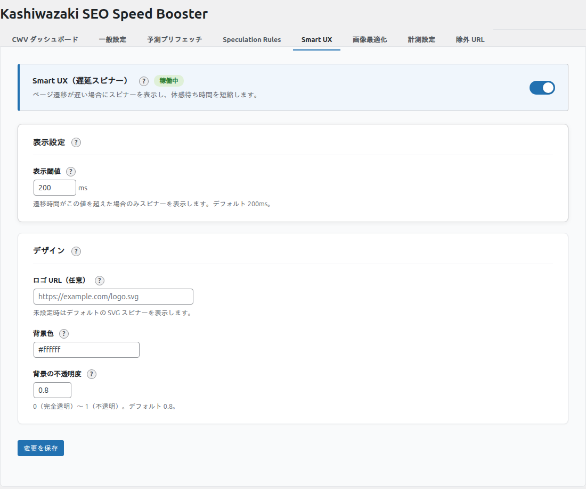

Smart UX スピナー
ページ遷移時にブランドロゴ入りのローディングスピナーを表示し、ユーザーの体感速度を向上させます。
Smart UX スピナーとは
前提条件
Smart UX スピナーの JavaScript は「予測プリフェッチ」機能と同じスクリプト（booster.js）に同梱されています。「予測プリフェッチを有効にする」も併せて ON にしてください。予測プリフェッチが無効の場合、スピナーは動作しません。
Smart UX スピナーは、リンクをクリックしてからページが表示されるまでの間にローディングオーバーレイを表示する機能です。実際のページ読み込み速度は変わりませんが、ユーザーに「処理中」であることを視覚的にフィードバックすることで、待ち時間の体感を改善します。
- 閾値（ミリ秒）以内にページが表示された場合、スピナーは表示されません
- 閾値を超えた場合のみスピナーが表示され、ページ遷移完了で自動的に消えます
- ブランドロゴを表示でき、サイトの統一感を保てます
設定画面

設定項目の詳細
表示閾値 smart_ux_threshold_ms
- ページ遷移にかかる時間がこの値（ミリ秒）を超えた場合にスピナーを表示
- デフォルト: 200ms
- 設定範囲: 0〜5000ms
- 0ms に設定するとすべてのページ遷移でスピナーが表示されます
- 推奨値: 200〜500ms（短すぎるとチラつき、長すぎるとスピナー表示前にページが遷移する可能性）
ロゴ URL smart_ux_logo_url
- スピナーの中央に表示するロゴ画像の URL
- 空欄の場合はロゴなしの CSS アニメーションスピナーのみ表示
- WordPress メディアライブラリの画像 URL を指定可能
- 推奨画像サイズ: 80x80px〜200x200px
背景色 smart_ux_bg_color
- オーバーレイの背景色（16進数カラーコード）
- デフォルト: #ffffff（白）
- サイトのデザインに合わせて変更可能
背景の不透明度 smart_ux_bg_opacity
- オーバーレイの背景の不透明度
- デフォルト: 0.8（80%）
- 設定範囲: 0.0〜1.0
- 1.0 で完全に不透明、0.0 で完全に透明
動作の仕組み
Smart UX スピナーは以下の流れで動作します。
ユーザーがリンクをクリック
同一オリジンのリンクがクリックされると、JavaScript がイベントを検知します。
JavaScript が閾値タイマーを開始
設定された閾値（ミリ秒）のタイマーを開始し、ページ遷移の完了を待ちます。
閾値以内にページが遷移すればスピナーは表示されない
ページの読み込みが十分に高速な場合、スピナーは表示されずシームレスに遷移します。
閾値を超えた場合、CSS アニメーションのオーバーレイが表示
タイマーが閾値を超えると、ロゴ付き（設定時）のローディングオーバーレイがフェードインします。
ページ遷移完了で自動的に非表示
pageshow / popstate イベントでタイマーがクリアされスピナーが非表示になります。通常のナビゲーションではドキュメント自体が置き換わるため、自然にスピナーが消えます。
ノート
Smart UX スピナーは同一オリジンのリンクのみに適用されます。外部サイトへのリンクでは動作しません。
ノート
予測プリフェッチとの依存関係については、ページ上部の「前提条件」を参照してください。
カスタマイズ例
コーポレートサイト向け
| 項目 | 設定値 |
|---|---|
| ロゴ | 会社ロゴ（80x80px） |
| 背景色 | ブランドカラー |
| 不透明度 | 0.9 |
| 閾値 | 300ms |
ブログ向け
| 項目 | 設定値 |
|---|---|
| ロゴ | なし |
| 背景色 | #ffffff |
| 不透明度 | 0.7 |
| 閾値 | 200ms |
ECサイト向け
| 項目 | 設定値 |
|---|---|
| ロゴ | ショップロゴ |
| 背景色 | #f5f5f5 |
| 不透明度 | 0.85 |
| 閾値 | 500ms |
注意
不透明度を低くしすぎると、ユーザーがスピナーに気づかず混乱する可能性があります。0.7以上を推奨します。